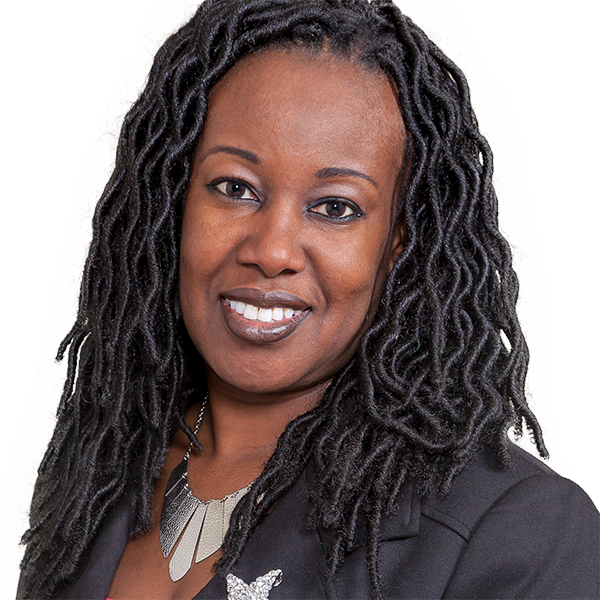
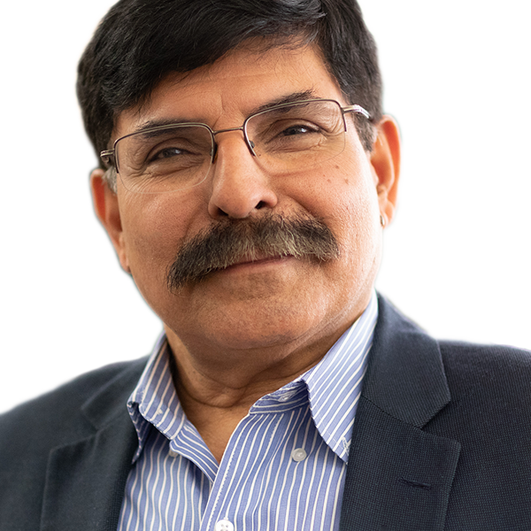
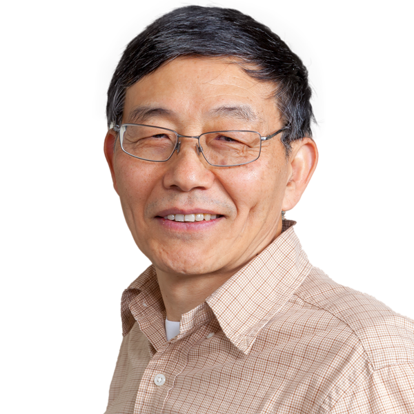

College
Newark College of Engineering
Departments
Biomedical Engineering31 facultyView directory →Chemical & Materials Engineering26 facultyView directory →Civil & Environmental Engineering60 facultyView directory →Electrical & Computer Engineering44 facultyView directory →Mechanical & Industrial Engineering51 facultyView directory →School of Applied Engineering & Technology22 facultyView directory →

Associate Deans

Lucie TchouassiAssociate Dean for Academics NCEDepartment Chairs
 Bryan PfisterDepartment Chair, Biomedical Engineeringtraumatic brain injuryNervous System Development and Regeneration
Bryan PfisterDepartment Chair, Biomedical Engineeringtraumatic brain injuryNervous System Development and Regeneration Lisa AxeDepartment Chair, Chemical & Materials Engineeringchemical and physical processes in environmental systemsTaha MarhabaDepartment Chair, Civil & Environmental Engineering
Lisa AxeDepartment Chair, Chemical & Materials Engineeringchemical and physical processes in environmental systemsTaha MarhabaDepartment Chair, Civil & Environmental Engineering
Durgamadhab MisraDepartment Chair, Electrical & Computer Engineering
Zhiming JiDepartment Chair, Mechanical & Industrial Engineering Samuel LieberDepartment Chair, School of Applied Engineering & Technology
Samuel LieberDepartment Chair, School of Applied Engineering & Technology